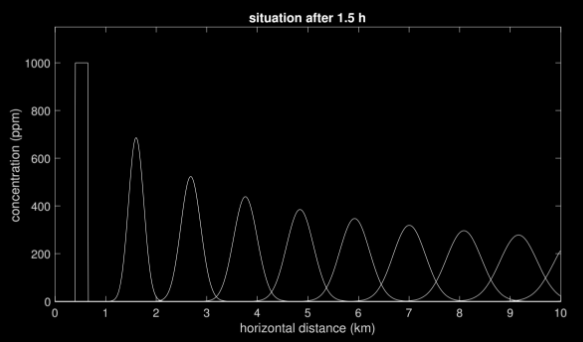
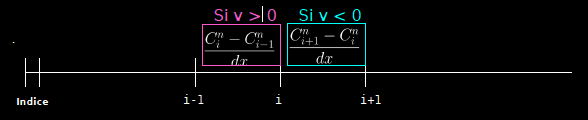

Cours 6#

Objectifs du cours#
Modèle 1D de diffusion-advection-reaction
Méthode de splitting
Discrétisation upwind de l’advection
Conditions de stabilité
Sauvegarde des résultats
Diffusion-advection: example#

Source : https://volcanoes.usgs.gov/volcanic_ash/ash_gas.html
Advection : Mise en équation#
Si l’on suit une particule \(x(t)\) mouvante avec le temps (p.e. dans une rivière) avec une vitesse \(v=x'(t)\), la concentration d’un produit \(C(t, x)\) autour de cette particule ne varie pas dans le temps:
ce qui se réécrit:
ou
Reaction : Mise en équation#
Nous pouvons modéliser la diminution (dégradation) d’un polluant assez simplement en utilisant l’équation suivante, qui dit que la décroissance de la pollution (la dérivée de \(C\) par rapport à \(t\)) est proportionnelle à la concentration (plus la concentration est grande, plus elle se dégrade), ce qui donne :
→ Nous appellerons l’équation ci-dessus une équation de réaction.
Noton que l’équation ci-dessus peut se résoudre analytiquement: \(C(t) = e^{-\gamma t}\). Ainsi, dans ce cas, le polluant se dégrade exponentiellement.
Equation d’Advection-Diffusion-Reaction#
Equation d’advection : \(\frac{\partial C}{\partial t} = - v \frac{\partial C}{\partial x}.\)
Equation de diffusion : \(\frac{\partial C}{\partial t} = - \frac{\partial q}{\partial x}, \qquad q=-D \frac{\partial C}{\partial x}.\)
Equation de réaction : \(\frac{\partial C}{\partial t} = - \gamma C.\)
→ L’équation d’advection-diffusion-reaction combine les trois:
Example : Polluant dans une rivière#
Imaginons qu’un polluant est déversé dans une rivière à un endroit, celui-ci:
se diffuse dans l’eau (→ diffusion),
se déplace avec le courant (→ advection),
se degrade naturellemet (→ réaction),

→ Pour décrire cela, il nous faut bien un modèle d’Advection-Diffusion-Réaction.
Méthode de “splitting” (1/2)#
Dans ce cours, nous résoudrons bon nombre d’équations de la forme:
Pour cela, on sait que l’on met à jour \(F\) avec la formule:
Pour cela, il est commode de traiter chaque terme (a, b et c) independement et de résoudre séquentiellment:
Méthode de “splitting” (2/2)#
Appliqué à l’équation d’advection-diffusion
cela revient à mettre à jour d’abord \(C\) pour la diffusion, puis pour l’advection:
Le “splitting” permet de découpler le traitement des termes de l’équation (diffus., advect. et réaction), et de résoudre les problèmes d’incompatibilité de taille.
Discrétisation du terme d’advection#
Le terme de droite de l’equation d’advection
se discrétise avec
dCdt = - v * ( C[1:] - C[:-1] ) / dx
La règle de mise à jour est différente de celle utilisée pour un terme de diffusion, car elle n’implique qu’une seule dérivée (donc dCdt est de taille nx-1). Rappelons que le terme de diffusion fait intervenir une dérivée seconde, et dCdt est de taille nx-2 puisque l’on perd une cellule par dérivation.
Pour mettre à jour C de taille nx avec le terme d’advection dCdt de taille nx-1, il y a deux options : décaler à gauche ou à droite. Pour faire le “bon” choix, nous utiliserons la méthode “upwind”.
Methode “upwind”#
Avec deux choix possibles pour la dérivée, l’idée de la méthode “upwind” est d’aller chercher l’information “dans le sens du vent”. Ainsi, nous prenons celle qui est en amont dans la direction donnée par le champ d’advection \(v\):
On approche la concentration \(C_i^n\) au \(i\)-ème point \(i \cdot dx\) au \(n\)-ème temps avec:

Dans le cas v>0#
Nous avons la situation suivante
0 1 ... i-1 i i+1 ... Taille
C |-----|-----|-----|-----|-----|----... nx
0 1 ... i-1 i i+1
dCdt_a=-v*(C[1:]-C[:-1])/dx |-----|-----|-----|-----|-----|-... nx-1
1 i-1 i i+1
C[1:] |-----|-----|-----|-----|----... nx-1
Ainsi, la mise à jour de l’advection se code:
dCdt_a = - v * ( C[1:] - C[:-1] ) / dx
C[1:] += dt*dCdt_a
→ La mise à jour agit sur les indices 1:.
Dans le cas v<0#
Nous avons la situation suivante
0 1 ... i-1 i i+1 ... Taille
C |-----|-----|-----|-----|-----|----... nx
0 1 ... i-1 i i+1
dCdt_a=-v*(C[1:]-C[:-1])/dx |-----|-----|-----|-----|-----|-... nx-1
0 1 i-1 i i+1
C[:-1] |-----|-----|-----|-----|----... nx-1
Ainsi, la mise à jour de l’advection se code:
dCdt_a = - v * ( C[1:] - C[:-1] ) / dx
C[:-1] += dt*dCdt_a
→ La mise à jour agit sur les indices :-1.
Discrétisation du terme de réaction#
Le terme de réaction ne pose aucun problème quant à lui, puisqu’il ne fait intervenir aucune dérivée :
dCdt_r = - gamma * C
C += dt*dCdt_r
Ainsi, pour le terme de réaction, la mise à jour s’applique sur tout le vecteur, il n’y a pas de problème de dimensions.
Condition de stabilité#
Prendre un pas de temps dt suffisement petit permet la stabilité de la méthode.
Pour le problème de diffusion, nous avons vu que l’on peut choisir:
Pour le problème d’advection, le pas de temps suivant est stable:
Ainsi pour un problème d’advection-diffusion, nous pouvons prendre:
Note: ce pas de temps fonctionne également si l’on a un terme de réaction.
Sauvergarde des résultats#
Jusqu’à présent, nous mettions à jour le résultat en remplaçant la solution à chaque fois :
C = ... # initialisation
for it in range(nt):
C+= ...
Toutefois, nous pouvons avoir intérêt à sauvegarder ce résultat dans une grande matrice, par exemple si nous voulons afficher les résultats à la fin sous une autre forme. Dans ce cas, il nous faut stocker notre variable dans une grande matrice :
C = np.zeros(nt,nx)
C[0,:] = ... # initialisation
for it in range (1,nt):
C[it,:] = C[it-1,:] + ...